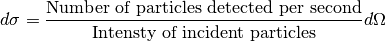
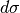
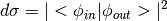
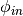
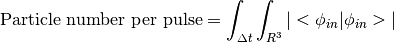

Theory¶
Scattering at Tree Level¶
Interaction between X-ray photons and electrons can be described with classical electrodynamics with a very high degree of precision. Traditionally, it’s described classically too. But it turns out that with (QFT) quantum field theory, the formulas involved can be derived within several lines. So I decided to derive the fomulas with QED (quantum electrodynamics).
One of the most important quantities in QFT is the cross section, or the differential cross section which is defined in the following way:

The integration of  is the total cross section of the particle.
According to QFT, the differential cross section can be generally expressed as

where  and  respectively represent the incident and scattered wavefunction of the incident particle flow. This formula is of course not an invention of quantum field theory. In regular quantum mechanics, the same formula holds perfectly. The reason that I resort to quantum field theory is to explain the polarization correction. I should point out that there is also clear classical explain of the origin of the polarization correction. I’ll include them in newer editions.
respectively represent the incident and scattered wavefunction of the incident particle flow. This formula is of course not an invention of quantum field theory. In regular quantum mechanics, the same formula holds perfectly. The reason that I resort to quantum field theory is to explain the polarization correction. I should point out that there is also clear classical explain of the origin of the polarization correction. I’ll include them in newer editions.
The price of nicer explanation of the polarization correction is a more abstract definition of the quantum states. Without loss of generality, one can assume that the incident beam is of the same wavelength. Since the emission position and the detector position are very far from the interaction position, it can be safely assumed that the incident and detected states are free states generated by the free particle generators on free vacuum. This in turn defines the normalization of the quantum state.

Photons are bosons and have no charge. Thus no particle number conservation law will constrain its particle number. Nevertheless, in free space, the above definition is valid.
Because we only consider